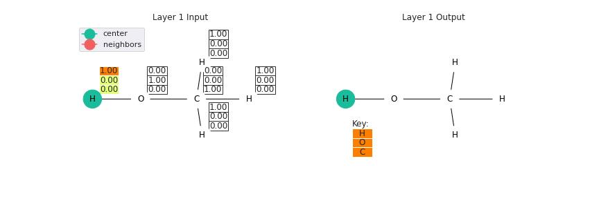
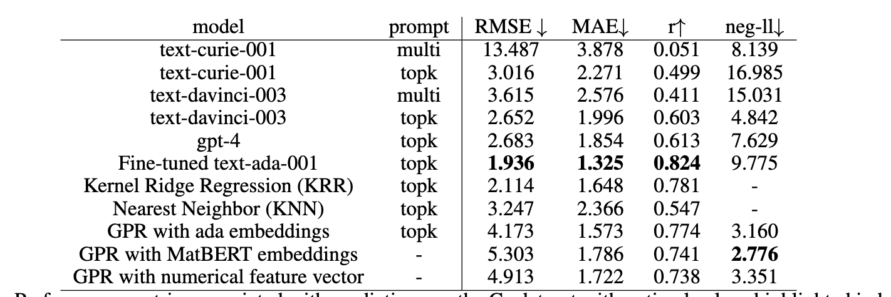

Language is the future of chemistry
Andrew White
Future House//
University of Rochester
AMLD GenAI
August, 2023
Brief Principles of Deep Learning for Molecules
Inductive Bias
Explicit choices made in architecture that reflect data-generation or solution space.
Inductive Bias
Explicit choices made in architecture that reflect data-generation or solution space. physics
Inductive Bias
Mol Graph
Point Cloud

Inductive Bias
Mol Graph
- atom permutation equivariance
- bond permutation equivariance
Point Cloud
- atom permutation equivariance
- translation equivariance
- rotation equivariance
The state of deep learning on molecules
Graph Neural Network

Graph Neural Network
Graph convolutional neural network example.
Weisfeiler-Lehman

Weisfeiler-Lehman
global stereochemistry
Equivariant Neural Networks
- Embed local 3D environment - Body order
- Message pass geometry and features - Tensor Order
Body order

Tensor order

Equivariant Message Passing

State of the field

Does it matter?

What if we use language?
Dinh, T et al 2022Arxiv 2206.06565
LIFT in Chemistry
The solubility of methanol is ____
Jablonka K. et al 202310.26434/chemrxiv-2023-fw8n4
Bayesian Optimization with Language
- Uncertainty
- Learning
- Fast Model Updates
Adding Uncertainty

Caldas M. et al 2023arXiv:2304.05341
IUPAC Name to LogS
"The solubility of 1-bromopropane is -1.73 logS"

Caldas M. et al 2023arXiv:2304.05341
Comparisons on Solubility
Catalysis
To synthesize Mn-Na2WO4/BN , BN (1.0 g) was impregnated with 4.5 mL of an aqueous solution consiting of Mn ( 0.37 mol) , Na ( 0.37 mol) , W ( 0.185 mol) , at 50 ºC for 6 h. Once activated the reaction is ran at 900 ºC. The total flow rate was 10 mL/min (Ar: 1.5 mL/min, CH4: 5.7 mL/min, O2: 2.8 mL/min), leading to a contact time of 0.75 s.

Learning
Bayesian Optimization

Code

Use in real setting
Why LLMS?
Language has been honed for thousands of years to reflect science. It will be how we join our tools, data, and scientists.
neuro-symbolic computing (Agents)

GPT-4
Which three residues with evolutionary divergence in the G domains of RAS isoforms also impose selectivity constraints of pan-KRAS non-covalent inhibition?
The three residues with evolutionary divergence in the G domains of KRAS, HRAS, and NRAS isoforms that impose selectivity constraints for pan-KRAS non-covalent inhibition are Thr35, Asp38, and Glu37. It has been observed that these three amino acids significantly influence the binding affinity and selectivity of potential non-covalent inhibitors, thereby determining the efficacy of different therapeutic strategies targeting the RAS isoforms (Hunter et al., 2015). The understanding of these residues' evolutionary conservation and differences across isoforms can aid the development of more effective pan-RAS inhibitors (Lu et al., 2016).
Wrong, hallucinated reference
It takes longer to verify the answer than to do the research
Grounding in context
Grounded GPT-4
What is the reason for making a bispecific antibody for CD38 binding?
The three residues with evolutionary divergence in the G domains of RAS isoforms that impose selectivity constraints of pan-KRAS non-covalent inhibition are H95 in the α3 helix of KRAS, and residues 121 and 122 (A121 and A122) in HRAS. The substitution of H95 with L and Q in NRAS and HRAS, respectively, is a notable difference between the isoforms. The residues 121 and 122 distinguish HRAS from NRAS and KRAS and are implicated in allosterically regulating selectivity (Kim2023PanKRASID pages 3-3).
Scientific Research Agent
Chemistry with Agents
Available tools: web search, pubchem search, LLM code model, calculator, python, synthesis planner, paper-qa
Question: Design a compound with same mechanism as Dasatinib and purchase it
Question: Propose a compound with similar properties to the drug Dasatinib. Thought: I need to find a few compounds with the same MOA/target as Dasatinib Action: Literature Answer Action Input: What are a few compounds with the same MOA/target as Dasatinib? Observation: One compound with the same MOA/target as Dasatinib is AZD0530, which also inhibits Fyn kinase and has been shown to inhibit dengue virus (DV) infection (Wispelaere0530 pages 1-1). Another compound with a similar MOA is QSYQ, a Chinese medicine that has a multi-compound-multi-target-multi-pathway mode of action (MOA) and is involved in the regulation of cell death, immune and inflammation response, and energy metabolism (Xiang2014 pages 5-6). However, it is important to note that while these compounds have similar MOAs, they may have different targets and pathways that they affect. Thought: I need to modify one of these compounds to make a novel compound
Thought: I need to get the SMILES string of one of these compounds Action: Molecule search Action Input: imatinib Observation: CC1=C(C=C(C=C1)NC(=O)C2=CC=C(C=C2)CN3CCN(CC3)C)NC4=NC=CC(=N4)C5=CN=CC=C5 Thought: I need to modify this compound to make a novel compound Action: Modify compound Action Input: CC1=C(C=C(C=C1)NC(=O)C2=CC=C(C=C2)CN3CCN(CC3)C)NC4=NC=CC(=N4)C5=CN=CC=C5 Observation: Cc1ccc(NC(=O)c2ccc(CN3CCNCC3)cc2)cc1Nc1nccc(-c2cccnc2)n1
Action: Literature Answer hought: I need to check if this compound is novel Action: Patent Search Action Input: Cc1ccc(NC(=O)c2ccc(CN3CCNCC3)cc2)cc1Nc1nccc(-c2cccnc2)n1 Observation: Novel Thought: I need to purchase this compound Action: Purchase Action Input: Cc1ccc(NC(=O)c2ccc(CN3CCNCC3)cc2)cc1Nc1nccc(-c2cccnc2)n1 Observation: Purchased from ZINC
I now know the final answer Final Answer: The compound Cc1ccc(NC(=O)c2ccc(CN3CCNCC3)cc2)cc1Nc1nccc(-c2cccnc2)n1 is a novel compound with similar properties to Dasatinib and has been purchased from ZINC.
ChemCrow
ChemCrow Paper: arxiv:2304.05376
Similar agents paper: arXiv:2304.05332

What about the rest of machine learning? How can we bring that to language?
Let's teach models to emit language
Natural language explanation
logS = -5.69
A Perspective on Explanations of Molecular Prediction Models. JCTC 2023
Conclusions
We are on the cusp of a revolution in science -- we can connect our data, research papers, the internet, and models within one framework.
Future House
Automating science to accelerate biochemistry
questions
acknowledgements:
nsf che #1764415, nsf cbet #1751471, nsf iis #2029095, nsf dmr #2103553, nih #R35GM137966